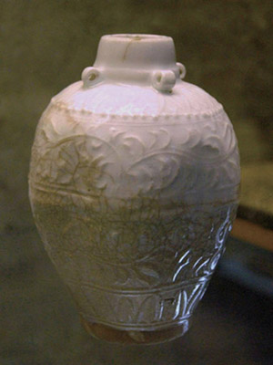

The ‘Marco Polo jar’ housed in the Treasury of the Basilica of San Marco in Venice
In terms of material cultural evidence, a Chinese Qingbai porcelain jar, known as
the ‘Marco Polo jar’, housed in the Treasury of San Marco in Venice, may be the only artefact
linked to Marco Polo and his visit to China.
This jar is about 12 cm tall, with a maximum diameter of 8.1 cm, a low foot-ring, and
a short neck with four small loop-shaped lugs. It has a hard, white, thin body that is coated
with Qingbai cream glaze. There are four zones of decoration presented in relief on the surface
of the jar, consisting of two bands of floral scrolls in the middle and two bands of petal-like
motifs near the top and bottom of the jar. (6)